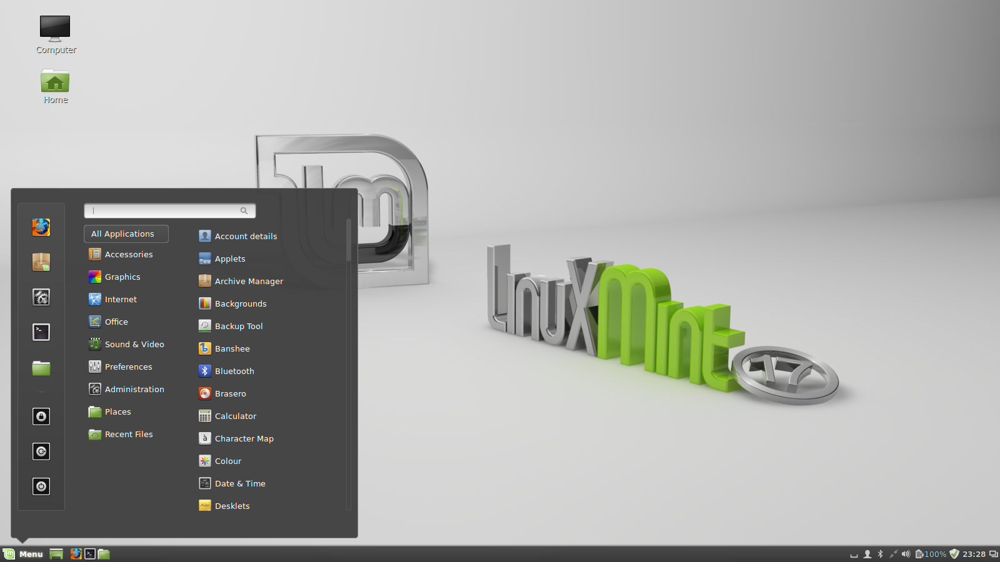

X-server (он-же X.org-server, он-же Xorg, он-же X Window System, или «иксы») — графическая оболочка, и иксами она называется на жаргоне пользователей Юникс-систем (GNU/Linux, BSD). Является фундаментом для графической оболочки. И ведь действительно он называется «сервером». Ведь как уже было сказано ранее Юникс разрабатывался как многопользовательская многозадачная система. Поэтому рабочий стол, или графическая оболочка имеет в отличии от виндоус клиент-серверную модель, в котором компьютер выступает в роли сервера, а экран пользователя – в роли клиента, и здесь не имеет значения, сидит пользователь за самим компьютером или же подключается к нему удаленно, это все равно клиент.
X Window System обеспечивает базовые функции графической среды: отрисовку и перемещение окон на экране, взаимодействие с устройствами ввода, такими как, например, мышь и клавиатура. X Window System не определяет деталей интерфейса пользователя — этим занимаются менеджеры окон, которых разработано множество. По этой причине внешний вид программ в среде X Window System может очень сильно различаться в зависимости от возможностей и настроек конкретного оконного менеджера.
В X Window System предусмотрена сетевая прозрачность: графические приложения могут выполняться на другой машине в сети, а их интерфейс при этом будет передаваться по сети и отображаться на локальной машине пользователя (в случае, если это разрешено в настройках). В контексте X Window System термины «клиент» и «сервер» имеют непривычное для многих пользователей значение: «сервер» означает локальный дисплей пользователя (дисплейный сервер), а «клиент» — программу, которая этот дисплей использует (она может выполняться на удалённом компьютере).
Система X Window System была разработана в Массачусетском технологическом институте (MIT) в 1984 году. Нынешняя (по состоянию на февраль 2016 года) версия протокола — X11 — появилась в июне 2012 года. Проект X возглавляет фонд X.Org Foundation. Референсная (или образцовая) реализация (reference implementation) системы свободно доступна на условиях лицензии MIT и подобных ей лицензий.
В этом примере X‑сервер принимает ввод с клавиатуры и мыши и производит вывод на экран. На пользовательской рабочей станции выполняются веб-браузер и эмулятор терминала. Программа обновления системы работает на удалённом сервере, но управляется с машины пользователя. Обратите внимание, что удалённое приложение работает так же, как если бы оно выполнялось локально.
А теперь рассмотрим самые популярные графические оболочки.
GNOME
GNOME (ɡəˈnoʊm) — свободная среда рабочего стола для Unix-подобных операционных систем. GNOME является частью проекта GNU.
Разработчики GNOME ориентируются на создание полностью свободной среды, доступной всем пользователям вне зависимости от их уровня технических навыков, физических ограничений и языка, на котором они говорят. В рамках проекта GNOME разрабатываются как приложения для конечных пользователей, так и набор инструментов для создания новых приложений, тесно интегрируемых в рабочую среду. Изначально один из самых популярных Иксов. Линус Торвальдс критически оценил третью версию GNOME, отметил ряд недостатков и предложил сделать ответвление GNOME 2, одним из которых стал проект Mate. Торвальдс сообщил, что отныне будет пользоваться Xfce. В 2005 году он тоже критически оценивал GNOME, назвав его «окружением для идиотов».
Впоследствии недовольство пользователей породило такие ответвления от гнома как Mate и Cinnamon. Так-же очень похож на иксы, использующиеся в МакОСи (за исключением цветовых решений) и в своеобразной копии макоси PearOS.
KDE
KDE Software Compilation (KDE SC) — свободная среда рабочего стола и набор программ от проекта KDE. До начала 2010 года была известна как KDE (сокращение от K Desktop Environment).
KDE был основан в 1996 году Маттиасом Эттрихом, который в то время был студентом Тюбингенского университета. Его беспокоили проблемы UNIX-десктопа, одной из которых было отсутствие приложений, которые выглядели бы и вели себя одинаково. Он предложил не просто создание набора программ, а скорее среды для рабочего стола, в которой пользователь мог ожидать однородного поведения программ. Кроме того, он хотел сделать эту среду простой и понятной в эксплуатации.
Ранее именно эту оболочку зачастую рекомендовали ставить людям, впервые переходящим с винды на линь.
Xfce
Xfce (произносится как Ecks Eff See Eee (экс-эф-си-и)) — свободная среда рабочего стола для UNIX-подобных операционных систем. Xfce — лёгкое настольное рабочее окружение для различных UNIX-подобных систем. Разработанное с целью повышения производительности, оно позволяет загружать и выполнять приложения быстро, сохраняя ресурсы системы (комментарий создателя). На втором месте по легковесности.
Unity

Unity — свободная оболочка для среды рабочего стола GNOME, разрабатываемая компанией Canonical для операционной системы Ubuntu. С 2010-го года является средой по-умолчанию в дистрибутивах Ubuntu. Unity являлась средой по умолчанию в Ubuntu Netbook Edition версии 10.10. Она позволяет более эффективно использовать маленькие экраны нетбуков, благодаря, например, вертикальной панели для переключения между запущенными программами.
Unity подверглась значительной критике в начале своего существования из-за того, что включённая в поставку с Ubuntu 11.04 версия была очень сыра и изобиловала ошибками. Однако на данный момент все баги решены, и продукт является вполне полноценным и конкурентноспособным
Также из-за существенных отличий в работе по сравнению с классическими версиями Gnome породила некоторое недовольство и привела к переходу части пользователей Ubuntu на Kubuntu и Linux Mint.
Cinnamon
Cinnamon (от англ. cinnamon — корица) — свободная оболочка для среды рабочего стола GNOME, являющаяся ответвлением от кодовой базы GNOME Shell. Основное направление разработки — предоставление пользователю более привычной, традиционной среды в стиле GNOME 2, удобной пользователям настольных ПК и ноутбуков, без недостатков GNOME Shell и Unity. Изначально разрабатывался командой программистов Linux Mint.
В данный момент Cinnamon используется в следующих дистрибутивах Linux: Mint, Fedora 18 и выше, Debian, Ubuntu, alt linux, Opensuse и др.
MATE

MATE — среда рабочего стола, являющаяся ответвлением от кодовой базы не поддерживаемой в настоящее время среды GNOME 2.
Название MATE происходит от испанского названия (исп. mate) вида падуба, растения, из листьев которого готовят одноимённый напиток. Произносится с ударением на первый слог.
Многие пользователи отказались от использования нового GNOME 3, призывая кого-нибудь продолжить разработку GNOME 2. Проект MATE был запущен пользователем Arch Linux для того, чтобы выполнить эту миссию.
Впервые о начале разработки MATE было объявлено 18 июня 2011 на форуме Arch Linux, пользователем Perberos, который и стал основателем проекта. Позднее к разработке MATE присоединились Stefano Karapetsas, Steve Zesch и Clement Lefebvre. В настоящий момент над проектом работают около 10 активных разработчиков и множество добровольных помощников.
MATE является одной из сред рабочего стола по умолчанию в дистрибутивах: Linux Mint, Sabayon Linux, Fedora DVD/Netinstall, ALT Linux P7 и Porteus. Также доступны пакеты для openSUSE, Arch Linux, Debian GNU/Linux, Ubuntu, FreeBSD, Calculate, Gentoo, и др.
LXDE
LXDE (англ. Lightweight X11 Desktop Environment) — свободная среда рабочего стола для UNIX и других POSIX-совместимых систем, таких как Linux или BSD. Самая легковесная.
Проект LXDE направлен на создание новой быстрой, легковесной и энергоэффективной среды рабочего стола. LXDE создана простой в использовании, достаточно лёгкой и нетребовательной к ресурсам системы. Она подходит для работы с низкопроизводительным спектром оборудования, таким как старые машины с ограниченными ресурсами и/или маленьким объёмом ОЗУ.
Enlightenment
Enlightenment — оконный менеджер с открытым исходным кодом для X Window System. Название переводится как «просветление» и часто сокращается до одной буквы E.
Вот и рассмотрены самые популярные (и то не все) графические оболочки. Чудно! Теперь можно приступить к обзору актуальных ОС целиком. Данная тема разделена на две последующих главы.